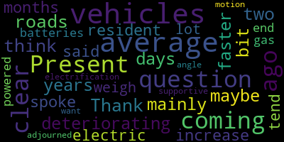
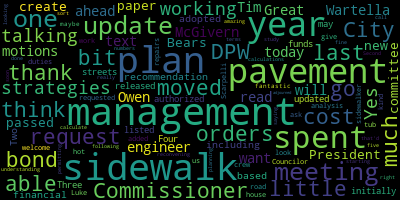
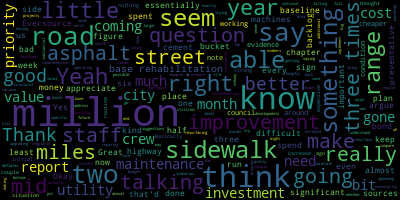

[SPEAKER_08]: Absolutely. President Bears. Present. Councilor Lazzaro.
[Leming]: Present.
[SPEAKER_08]: Councilor Leming.
[Leming]: Present.
[SPEAKER_08]: Councilor Scarpelli.
[V64stR284Pc_SPEAKER_02]: Councilor Scarpelli. I see that he's present. I'm going to mark as present. And Chair Calderon.
[Callahan]: Great, so today we are doing a pavement management plan update, and I want to thank Commissioner Tim McGivern and our engineer Owen Wartella for being here. I will go ahead and read the text of the motions that we passed at our last meeting. President Bears has moved that we create a new paper in this committee to request an update on, one, the pavement management plan and sidewalk management plan for the DPW. including the financial plan recommendation that the City adopted based on the pavement and sidewalk management plan. Two, what the City has spent on pavement management and sidewalk management since the plans were released. Three, how much was spent from authorized bond orders if funds were spent on streets and sidewalks other than those initially listed for the bond orders. Four, when the pavement and sidewalk management plans may be updated. And then Councilor Scarpelli moved to ask the DPW Commissioner to do a cost analysis for road and sidewalk repairs and to request a sidewalk and hot tub crew to do the work in-house and to look at the costs for Luke's sidewalker and to have that be added into the duties. I welcome you and thank you so much for being here. If you would be able to give us kind of the update as requested, that would be fantastic.
[zI7b343mLuM_SPEAKER_10]: Hi, so thank you for having us we are I'm Owen. This is Tim and The update has been available. We put it on the engineering website. So it's available to the public basically what it says and not so many words is basically our pavement evaluation for the whole city has decreased by just a slight tick, and our sidewalks have gone up in these index numbers that we evaluate higher the number being the better the roads, lower the number being lower the roads. Do you have any other questions you want to go with? I don't know how I can go into a deep dive into anything.
[Callahan]: So I think maybe a little bit of understanding of the five strategies and which one of those strategies we've been following. If you can go a little bit into that, that'd be amazing.
[zI7b343mLuM_SPEAKER_10]: Right. So we've been spending roughly in the mid seven digit dollars worth of range. And that basically is a little bit more than doing it's more than doing nothing. It's more than doing the bare minimum. And it's basically going from those category three to the category four, which is basically spending a little bit more than chapter 90 money and going into other resources, which we've gotten really creative by doing, by getting grants and wrapping these into larger infrastructure projects as well.
[McGivern]: and agreements with utility companies, for example, Eversource and their whole corridor, their three-mile corridor is a good example of that. So trying to aggregate all of those and compare that to the $6 million a year that's being recommended that we spend is tough to get a handle on, but we have a good order of magnitude, which is what Owen is talking about. So, you know, we can talk about that exactly how you guys want that format to look like. But the idea would be to head in the direction where we're doing more contract work and more in-house work, attacking it from both directions, really. And the reason for that is, you know, for example, Chapter 90 funding, you need to go a certain length before you can get that funding. You can't do spot repairs. So we have a new paver, a new roller. And we bought those with some bond money that we got, and we spent the rest of that on sidewalks. But I'd like to have a highway crew that can take advantage of our new machines two to three times per week instead of two to three times per month. So that piece is really important. The utility company piece is really important. The service restoration work that developers do is very important. And the work that the city does in-house is very important, contract and labor. So, you know, we got to put all these pieces together and come up with a, not just a strategy, but a funding strategy that goes with that.
[SPEAKER_00]: I'm going to go ahead and have city councilors ask any questions. I have some as well, but I'll do that later.
[Bears]: Thank you. Thanks for being here. Both of you. I think that it's a good sign that there's been some improvement. Seems like we're a little better off than we thought a couple of years ago in the initial plan. So I think that's that's really a strong sign. I do have a few questions. It does seem. You know, some roads are we have an improvement, an increase in the do nothing. We're in a good situation. So that's good. Basically, the routine maintenance of our miles in the same place, the preventative maintenance miles has gone down, but the base rehabilitation miles has gone up. And those are the most expensive streets. The report says that the. The recommendation is essentially to have a really substantial full resurfacing program in place to try to keep the structural improvement and moving that back up into preventative maintenance, just avoiding streets falling into the base rehabilitation. Is that something that the highway crew, if there were a highway crew to run the machines, would be able to do?
[McGivern]: That's exactly the type of work I'm talking about. We can do crack sealing via contract because we don't do that work in-house. So to bring in a professional to seal our cracks is one thing, but it's expensive to mobilize crews just to do pavement patching. We've done it. We would rather do that work in-house.
[Bears]: And that would be like a more comprehensive resurface and taking a larger area. Yep. And that avoids going into base rehabilitation.
[McGivern]: Sure. Think of think of Lawrence road a couple of years ago. Lawrence road had patches of puddles. Now it has rectangles of asphalt. So that's the type of work I'm talking about. To get a contractor to come in and do that work, we're paying a premium for that. It needs to get done, so we're going to do it. But to shift the balance of that type of work to in-house is the direction we want to head. And the full paving of multiple blocks of road is what we want to hire contractors to do, that production style work.
[Bears]: And that seems like a major priority. Do you have a range on what it would, uh, you know, you said coming from two to three times a month to two to three times a week, do you have a range of what it might cost to have the staff level to do that for your team?
[McGivern]: To put a, uh, to put like a, another sidewalk or pavement crew out there on the regular.
[Bears]: Yeah. To go from the two to three times a month to two to three times a week.
[McGivern]: Sure. Yep. Um, so we're talking a range depending on, you know, the, how fancy of a car you want to buy. Uh, but we're talking probably in the 400 to $700,000 range, you know, depending on number of people.
[Bears]: And that'd be operating budget for your, that'd be staff essentially to run these machines regularly, more regular than staff and staff.
[Bears]: My only other question, and I know that it is difficult to, you know, figure out exactly what the value of, say, the Eversource repaving on Winthrop Street is, or the various utility projects or developments that are upgrading roads and sidewalks are. But I do think I appreciate the mid-millions range, the mid seven figures range put out there. But at least this plan, there's a pretty significant, I could argue that 3.5 million is in the mid-millions, and I could argue that six million is in the mid-millions. And if those are the two kind of baseline scenarios here to address the backlog and you know the 6 million. we end up almost 30 million lower than we do at the three and a half million. So if there would be some way for us to at least have an estimate, I understand that it'd be difficult to say, you know, ever sources was worth this much money. So we had 6.21 million this year. I get that that's really not necessarily possible, but something to say, here's what we know. We spent some bond money on this. We spent chapter 90 on this. We think the utility value and developer value was a million or 2 million in that range. you know, something so that we could compare annual spending to these suggestions.
[zI7b343mLuM_SPEAKER_10]: So I've only just started tracking this, so it was never really tracked before, and this is kind of how we're like holding the utility companies accountable for this work. So I have a base number of what was possibly used prior, but I don't have anything to compare it to until the end of this construction season and how to get that. So my intent is to have that for you moving forward. It's just we're at the early stages of doing it.
[McGivern]: And don't forget, the numbers are a little bit skewed, I think, right now, because Eversource's project was large. It was 3.1 miles or something of resurfacing. We wouldn't have been able to do that in a year. So that inflates the number a little bit. So just kind of have that on your radar. The number, you mean the condition number? The condition number.
[Bears]: It's a little better because of that.
[McGivern]: Yes. Yeah, absolutely. Yeah.
[Bears]: It deflates to how much we actually need to pay in the future.
[McGivern]: Exactly. And it also is a misrepresentation of how much we spent. Right. Yeah.
[zI7b343mLuM_SPEAKER_10]: And that was also, you know, a very more expensive corridor due to being, you know, Main Street to Mystic was that was just, you know, due to traffic and location-wise. If you get into side streets, your money goes a lot further, where you don't have to work at night, you don't have to work on the weekends, you don't have to have police details. It's hard to justify a length with a cost, because it's really dependent on where you are.
[Callahan]: You're talking about both the year 2021, year 2022, year 2023, that all of those numbers in terms of being able to sort of calculate what we spent, that all of those are ones that you're working on?
[zI7b343mLuM_SPEAKER_10]: I missed the question. Sorry.
[Callahan]: So if we're looking at what was spent each year, and you're saying that these calculations really haven't been done before, are you working on those from years starting with the 2021 pavement management study? Or are you just talking about the last year?
[zI7b343mLuM_SPEAKER_10]: I'm working with since I've been here. So I've been working since like 2023, 2022 numbers, and then moving forward into this construction season as well. OK, thanks.
[Bears]: Great, yeah, and I appreciate that, and that's great that that's being done. I think even if it's not 100%, just being able to say we're closer to 6 million than 3.5 million, this is kind of, you know, the investments we've been able to make. And I think it's important for people to know too, right, like that specific, how much is coming from the utility side, right? We can make the case like we need this additional investment because we're not going to have Eversource doing three miles every year or every two years, right? That's an important thing to be able to say.
[McGivern]: was in 2021 we had a similar conversation when the original report came out right uh talking about this um and i think it was close it was closer to about a million dollars extra at the time so you know chapter 90 gives us about a million dollars and it was about another million dollars if you would add it all up and put it together but that was very back of the envelope um so i think My point with Eversource before was just that they may have done like $3 or $4 million with paving work, and National Grid at any given year might do like a million dollars worth. Right. You see what I mean? But again, that's just like a really rough estimate. It's kind of hard to grab that number, but that's kind of an order of magnitude we're talking.
[Bears]: Right. And I think that's just helpful. It's like, what are the sources, whether it's Citi, Chapter 90 bond, utilities, that's getting us towards the six million so that we're making that steady improvement. Yeah.
[zI7b343mLuM_SPEAKER_10]: You know, and another thing that I'd like to mention here is that, you know, just the costs of doing one road, like a bad road and bringing it like new is that would eat. It's more than what we get in Chapter 90 month. So, um, We're working on a project that deals with 2 roads in South Medford, and the construction costs are $1.5 million for 2 roads. And we only get 1.4 in Chapter 9. So we're trying to get creative. We're trying to pair these up with infrastructure costs or with like, you know, water main projects, and usually that can help stretch the money where we can get more roads done. But we currently have six roads that are on the docket for this season to like full redone. There's we're pulling together a patching list project, just like we did last year, which is about $250,000 worth of work. And then the mayor just okayed the crack ceiling project for, you know, that has about 40 roads going on with that. So we're basically freezing the backlog and trying to pick away at it each year.
[McGivern]: but you might be able to see the cliff like we can too, because that means we're not spending that money on rebuilding road bases, which is really expensive stuff. And the longer we wait around for those roads to hit the fiscal cliff of that level of deterioration, then we're kind of back at square one. So, which is again, goes back to my point of hitting it from both directions in-house and contract work, but also big money contract work.
[Bears]: And it's almost like there's two, buckets here, it's all the stuff to do to make sure a road doesn't get so bad, and then you have to spend a million and a half to do a road if it's that bad, and trying to keep the roads out of that. And it seems like that's, it seems like we've done a little bit of both, right? Like there's some roads that are in a better shape, but now there's a bunch of roads that are now in that bottom bucket, and that's the one where you're talking about big numbers and backlog. But my other question was on the sidewalks. I saw that the report I think is saying we need to spend about $2.5 million a year on sidewalks, or it says recommends the city continue to implement a baseline of $2.5 million to maintain current network conditions. So the aggregate total would be $6 million plus the $2.5 million, $8.5 million. Yes. Okay. Got it. And it does seem like the
[SPEAKER_05]: Yeah, we spent all the bond money with the sidewalk work. We're still working through that.
[Leming]: Thank you. So just two questions. So on average, do you think that roads are on average deteriorating a bit faster these days than they did maybe 10, 20 years ago? The question is mainly coming from a resident that I spoke with a few months ago who said that with the increase in electric vehicles, which on average tend to weigh a lot more because of their batteries than gas-powered vehicles that those would end up having.
[zI7b343mLuM_SPEAKER_10]: Those would end up making roads deteriorate a little bit faster, especially as they... I would say that it would be less because of electrical vehicles, but more because of climate change. Usually, And we've talked about this before.
[Leming]: To be clear, I'm supportive of the electrification of vehicles. That's not the angle I'm coming at this from. So I just want to be clear about that.
[zI7b343mLuM_SPEAKER_10]: I wouldn't say it's the weight of a car. It's more like the freeze-thaw cycle is what it is. Basically, we're not going into a freeze in the winter where it's a continuous freeze. which, you know, is less impactful than when you have a freestyle freestyle freestyle over the course of a winter. And these past few winters, we've known that, you know, while we didn't get snow, we had freestyle. And that just basically turns the roads to, you know, this brittle, so that slowly pulverizes them from beneath.
[McGivern]: So that's why you see a lot of that alligator cracking turn into potholes over the last two or three years. It didn't happen that fast before. But I would also say the mix has changed over the last 20 years. So they're using more recycled content in the mix. The jury's still out whether or not that's making roads last longer or not. Trucks. There's more of them. Those are the heavy things that cause that elastic reaction inside the pavement and helps it deteriorate faster. Population increase is more people, more cars, more honking. And then the free spot, which is probably the major contributor.
[V64stR284Pc_SPEAKER_02]: Thank you.
[SPEAKER_00]: Do we have other questions, either from the public or from city councilors?
[Bears]: Just one, I noticed the sidewalk material that, which I'm assuming is asphalt, that stayed the same price, but Portland cement's gone up $3 a square foot. Is the city going to move to using asphalt for our sidewalks, or are we going to stick with cement?
[McGivern]: That's a really good question. I hate to be the one who says, please stick with cement after just looking at what happened on the Fells River TCR. Well, I'm a big fan of, you know, putting it back the way that it should be if we can. So you might notice places in the city where there is concrete and then a patch of asphalt and then more concrete. Well, we do fully intend to come back there, or wherever the utility companies come back there and put concrete in. But the idea that we're going to complete that patchwork towards asphalt, it would need to be a bigger economic gain, I think, than what you described. Certainly, there will be that tipping point if all of a sudden, you know, concrete, right? But I don't think we're there yet.
[Bears]: It was double the cost that you're talking about it being a significant cost.
[McGivern]: Sure. Yeah, it can be significant too, depending on the cost of both of those items at any given time. Right.
[Bears]: Yeah, I think that was the justification from DCR. Oh, it's a little bit cheaper to use asphalt and it's a little bit cheaper to repair asphalt.
[McGivern]: Sure.
[Bears]: Okay.
[McGivern]: Well, when you're doing whole production work on the entire corridor like that, those small changes add up to huge dollars.
[Bears]: Yeah.
[McGivern]: I think there's the
[Bears]: you know, quality aspect of it is the flip side.
[McGivern]: It's easier to install. It's quicker to install. It's more flexible. It's easier to repair. So there are benefits to it, but I agree that cement concrete looks better. It usually has a more consistent way of maintaining it, I'd say, because it can go panel by panel. Yeah. So there are a lot of benefits. Cool.
[Bears]: Thank you.
[McGivern]: Yeah.
[SPEAKER_03]: Any final comments? Any other questions? We may indeed end this by 730. If there are no other questions, one last question from President Benson.
[Bears]: Not a question, but I did just want to note coming out of the financial task force press release from last month that working on what we've been talking about here around an in-house crew, which has been a priority of this council, since I've been on it, and since before I've been on it, it's clearly a priority of the department. It's something that the leadership of the school, well, the city council and the mayor are considering bringing forth as something to ask the residents to support, and I think This evidence, the evidence that we've seen in this report and what we've been talking about, and quite frankly, just the overwhelming public sentiment around the condition of our streets and sidewalks, more than indicates that that is a valuable investment to make. So I'm hopeful that it will be something we'll be able to do collectively and together to start really working on even more of this than we've been able to work on so far.
[McGivern]: That's what we want to do. Wonderful.
[SPEAKER_00]: Thank you so much to both of you. Do I have a motion for the floor?
[Leming]: The motion is adjourned.
[Callahan]: Second.
[SPEAKER_00]: The motion is adjourned from the President of Affairs, seconded by Councilor Leming.
[Callahan]: Yes, I think we're fine.
[SPEAKER_08]: Councilor Lazzaro. Yes. Councilor Fleming. Yes. Councilor Scarpelli.
[Bears]: Yes. And just a note, we'll be reconvening, planning and permitting.
[Callahan]: That's right. We are reconvening, planning and permitting as soon as this meeting is over. Did you call me? Yes. This meeting is adjourned.
|
total time: 0.67 minutes total words: 112  |
total time: 2.01 minutes total words: 373  |
total time: 5.88 minutes total words: 1140  |
|
{kind=link}
{kind=link}
{kind=link}